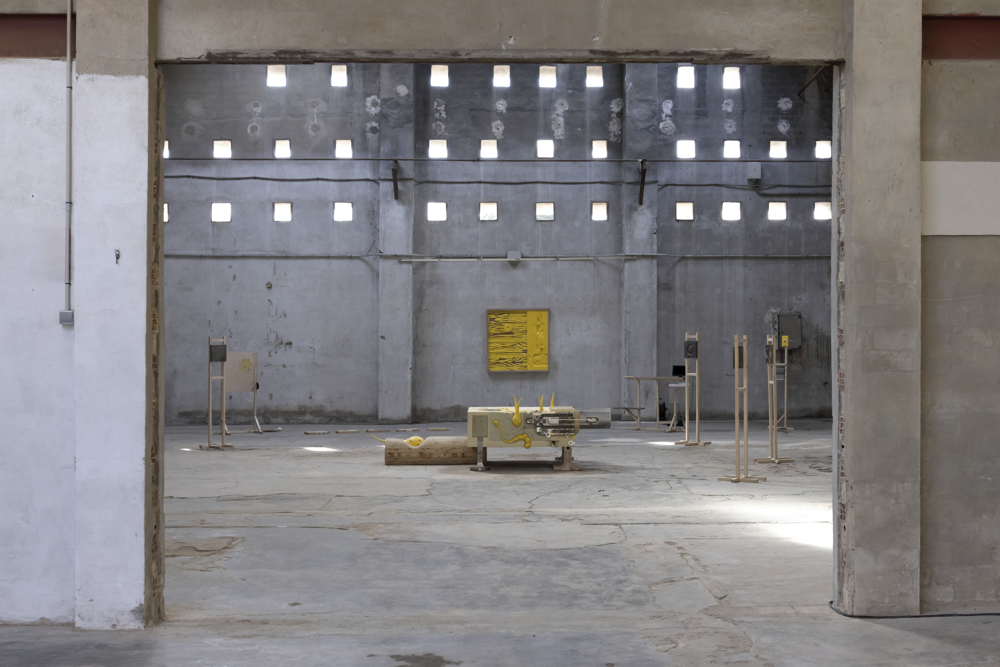
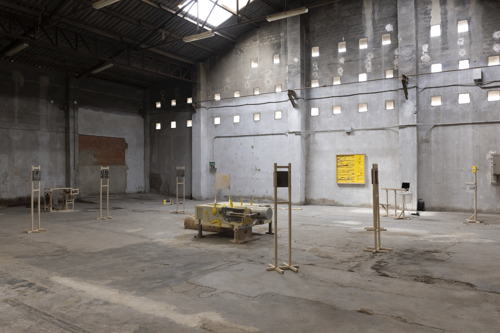
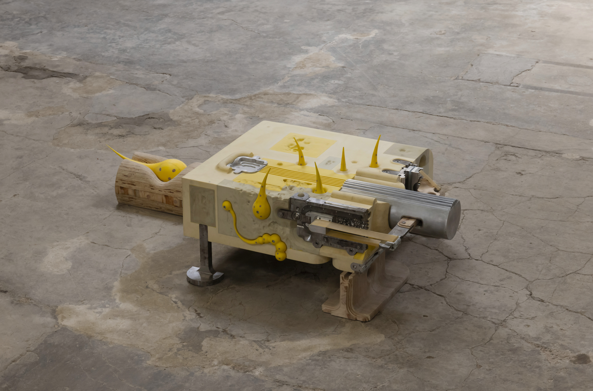
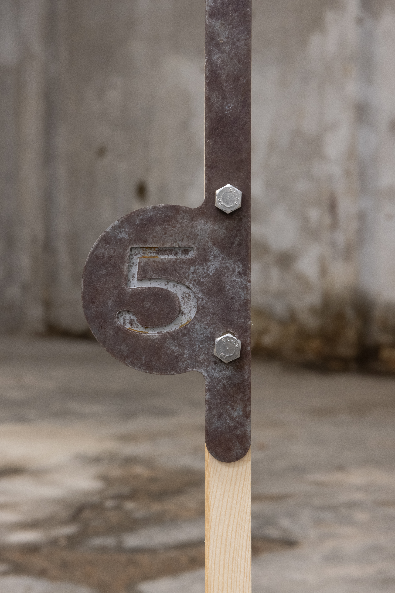
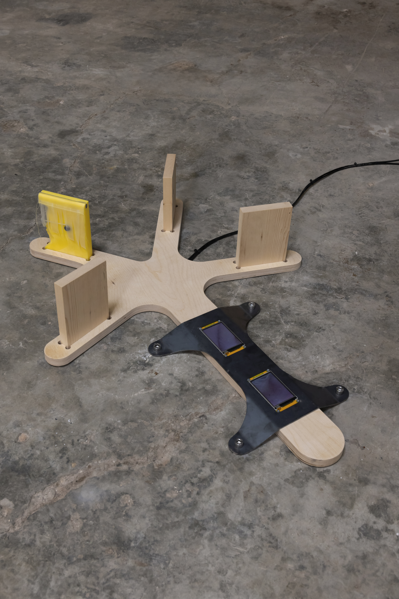
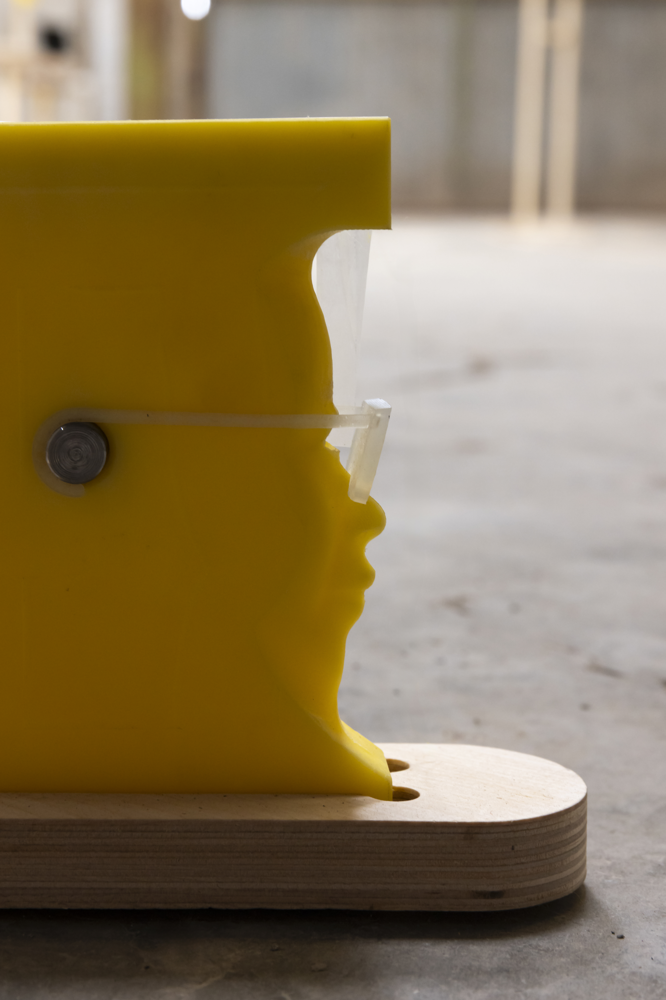
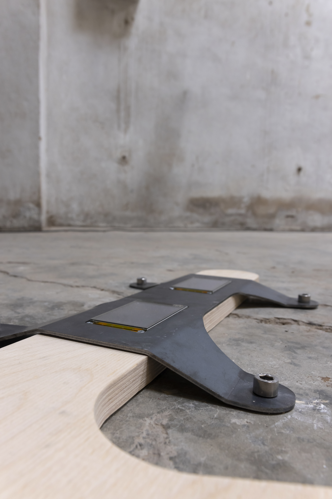
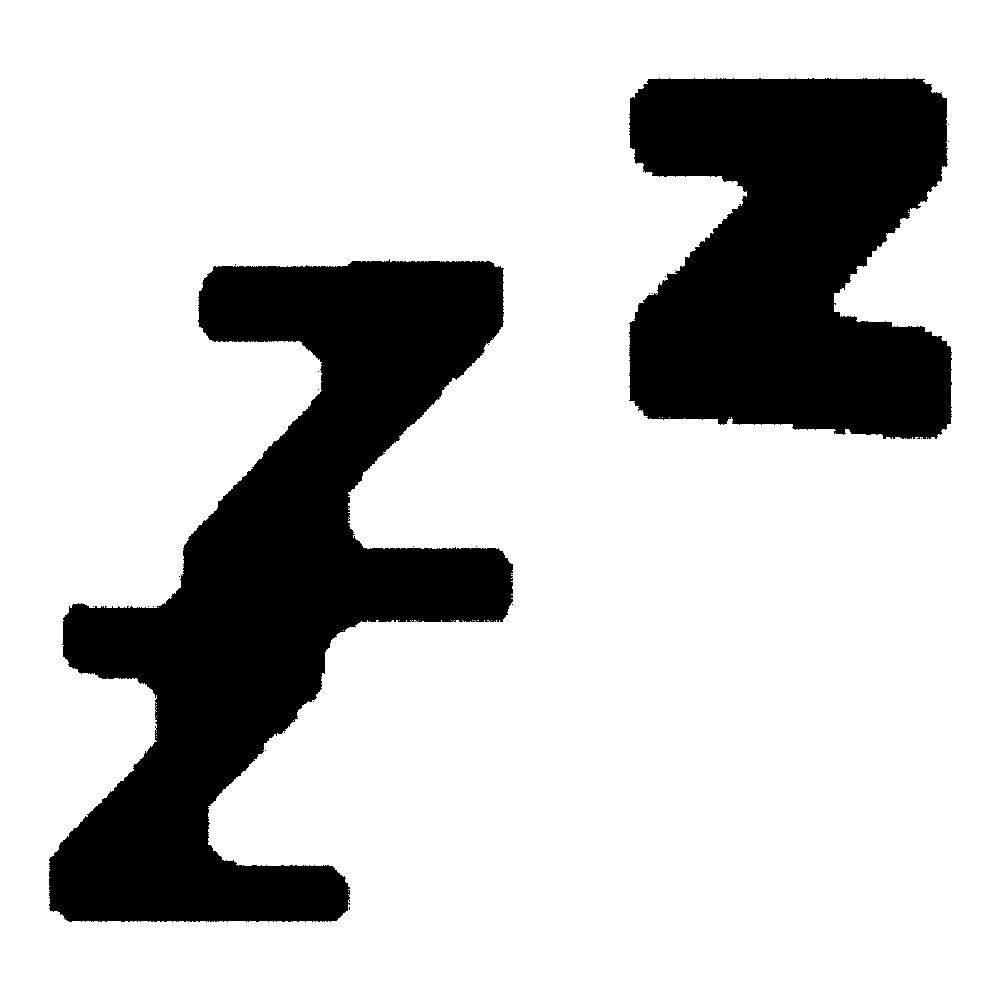

zzz
Venue: PLUTO, ValènciaOpening - Closing Dates: 19 September 2026 - 19 October 2026
Photography: Bernat Perez
Acknowledgements: Nurettin Ilik, Stephen Mayer, Aslı Önlen, Nilo, Salome, Ece, Emrah, Ibrahim, Selim, Ege, Altay, Rita, Carlos, Jose, Mateo, Bruno, Agnesse, Richard, Felipe, Sesa
Developed over approximately ten months, zzz is a material and manufacturing study. Through sculpture and moving image, the exhibition explores different processes of making, connecting the physical production of the work with the fragmented experience of falling asleep.

I’m about to fall asleep on the couch.
My kneecap aches. The leather couch is warm, but the side of my body that isn’t touching it is cold.
There’s a black cat on me.
Across from me is a steel kitchen unit. Its surface shines. Dozens of fingerprints show on the upper shelf. I’ve wanted to wipe them off for months, but they always appear when I can excuse putting it off.
The cat jumps off. I turn my face towards the couch.
I’m about to fall asleep. I feel restless. Something that would turn me on comes to mind. The leather cushion I’m holding gets too warm. I push it away a little and let its cool surface fall against my body. Within seconds it warms up again. My watch bothers me. I take it off and let it slip from my fingers into the gap between the cushion and the couch. I’m afraid I’ll forget where it is. This fear ends within seconds.
I open my eyes briefly, then close them again.
My thoughts are becoming more fluid. I can tell I’m about to fall asleep.
Again, freeing myself from the everyday frustrations keeping me awake, the sculpture I’m making… I feel myself falling and wake up. The upper right of the sculpture I’m making… I seem to fall asleep. This time I stay asleep longer. I’m climbing down from a large crane. I hand the camera to a smiling woman I don’t know. I ask her to take our picture. I’m not sure she can fit the large structure behind us into the frame. At 0.5x we’ll come out dark because it’s evening. At 1x the structure won’t fit. We pose. I take the camera back. The photographs are terrible. I smile and thank her. The song ends, the woman walks away, and I wake with the silence before the next song.
I breathe. Cool, sharp air enters through my nose. I hold on to this breeze. I recognise the music and I’m pleased. I drift off again and suddenly feel troubled. A momentary heat sears me from the back of my neck to my stomach. I’m sad, thinking I’m wide awake and back at the beginning.
Like in the game where I died, I realise I’m starting again from where I lost on my way to sleep. I’m glad. I’m on the lower ground floor. On a balcony facing the back door of a kitchen covered in ugly tiles. White light and yellow tiles. One foot behind the other, I lean against the wall. The foot on the ground carries my weight. The other helps me balance.
I yawn. My nose is blocked. I sniff. I move the thick lump of snot on the right in circles at the back of my throat and swallow it. The new song bothers me. I lose myself in a yawn, as if my mouth will tear open. I’m awake. I yawn again and my right eye waters. The wetness disturbs me. The wound where I’ve bitten the skin around my left index fingernail stings. My tear grows and runs down my right cheek. A sharp pain appears in my left ear and disappears. The drop on my cheek suddenly becomes unbearable. Moving for the first time in a long while, I wipe it away. And scratch my cheek. The itch becomes a barely there saltwater sting. I’m very tired. My friend turns to look at me. I’m very tired. I swallow. I run one finger over another. Someone with curly hair. the waiter takes receipts out of his pocket. The parking attendants laugh among themselves. My fingertips are numb and coarse. As if their last joints are connected to a single nerve ending.
Grey frame. Everyone in the dormitories. I go up to the mezzanine. The boy in the yellow jacket holds a sheet of yellow acetate. His skull is large, the little brain inside is spinning. You’ve done well, says someone I don’t know. It’s nicer inside.
I could live for three months on this money, he says, maybe four. A mediator would be good. Glasses on my left I’m standing. The plastic on my right shines.
Brings a vase. Holds on tight with both hands while coming down the stairs. Comes down very easily.
Coffee is free for the older ones. The vase almost falls. The man in front of me has an interesting vent at the back of his jacket. Like a pocket upside down. A necklace hangs out of it. The necklace is mine.
The hairs on my leg are falling out. Yellow light blinks on the wooden shelves...
Vodafone calls.













